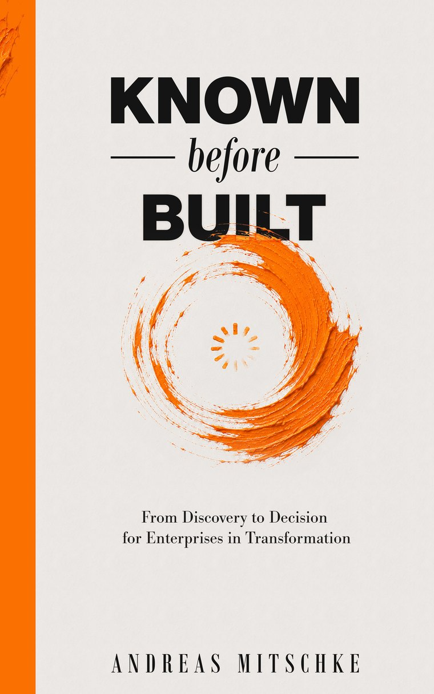
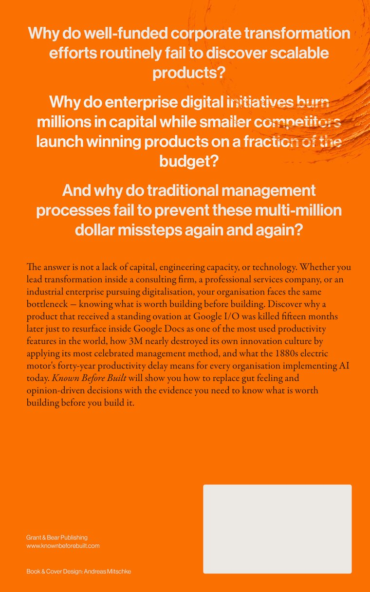

I help organisations discover what is worth building, then design and operate the growth systems across product and marketing to turn that newfound certainty into revenue. 15+ years in growth, marketing and product experimentation, in B2C and B2B tech, industrial and deep-tech organisations. Two bigger wins, many smaller wins, many failed bets, author of Known Before Built.
Since my teens I've been designing interfaces for perceived ease of use and functionality, and task flows that are based on real usage analysis. Research always came first, the market the interface lives in and the person using it. Twenty years on, the principle hasn’t changed.
Design was a choice, code was an unwanted trial by fire. For three years, a veteran developer pushed us through the complete O'Reilly C++ Object-Oriented Programming manual in school, which led to a .NET Win XP tune-up tool (complete with performance monitoring and a dangerous safety-overwriting task-killer) coded by two friends and me. This also led to tutoring informatics students while still navigating my own non-informatics curriculum. Only years later did I appreciate the full ROI of this trial. While heavy back-end wasn't my thing, front-end stuck. During the blogging era, I built and grew blogs, custom PHP WordPress themes and widgets—launching, monetizing, and selling them. Though I've never worked as an engineer, this code literacy gives me an edge in product and growth leadership: the ability to analyze codebases, design and develope product and growth experiments, and speak eye-to-eye with engineering.
First venture at 15 with web design services, then a travel-experience platform. The path was anything but straight, with plenty of failures, yet plenty of small wins, and two exits.
My growth path began in 2008 with technical SEO—experimenting with early black-hat methods and exploiting algorithm gaps to engineer organic search visibility at scale. That quantitative search foundation naturally evolved into conversion rate optimization, combining data analysis with my background in creative design, and expanding into organic social as social media marketing exploded in the 2010s. As the teams and products I worked with matured toward scaling potential, I expanded organic into paid acquisition, building out performance marketing across social (pioneering the granular power-seller segmentation we all miss) and search with Google 360. Together, these verticals form the core of my T-shaped profile, anchored by continuous product discovery, validation, and rapid experimentation.
From ground-level product discovery and growth loops to departmental leadership and executive advisory Partnering with scaleup and enterprise leaders to embed discovery frameworks, engineer growth engines, and scale complex teams backed by 15+ years of execution and strategy across B2C and B2B tech, SaaS, industrial, and deep-tech sectors.
VC fellowship in New York. About two years of venture scouting and deal brokering for four funds in Europe, New York and Silicon Valley. Accepted to VC Lab, 2023.
Growth and product advisor to startups through 500 Global and Loyal VC. Around half a dozen advisory seats active right now.
Coached founders at the Mannheim startup centres. Lean Startup principles, Knapp's Design Sprint ideas, BMC and Design Thinking, none of which work until you also teach people to get out of the building and find real-world data.
Taught entrepreneurship and product discovery at universities in Mannheim. Guest lectures on growth in Heidelberg and Karlsruhe.
Independent research, currently on entrepreneurship education. The same habit I bring to every problem: go deep, find evidence, analyze, synthesize and decide
Don’t ask for opinions. Ask for behaviour.
Opinions describe what people believe they would do. Behaviour shows what they did. Reported behaviour beats opinion, and observed behaviour beats both.
They are the rock stars. You are their fan.
Customers, buyers and users are the experts on their own problems. Your job is to listen and observe to understand their reality to see what they can't see.
Research is the foundation of everything.
Know the market, the customers, the buyers and the users in depth. That is how you find the right product and also the channels to grow it.


From Discovery to Decision for Enterprises in Transformation.
An intrapreneurial operating system that replaces the innovation theatre of brainstorming sessions and Post-it-plastered whiteboards with evidence-driven discovery and validation methods, enabling you to de-risk every hypothesis before a major investment decision must be made.
Keynotes, speeches, panels, fireside chats, workshops, guest lectures and podcasts in English or German. I created and organised many event series long before I spoke at them, so I know what organisers need.
A new channel, a new vertical, a new product or feature. Let’s find it, then grow it, then scale it.
Let’s talk